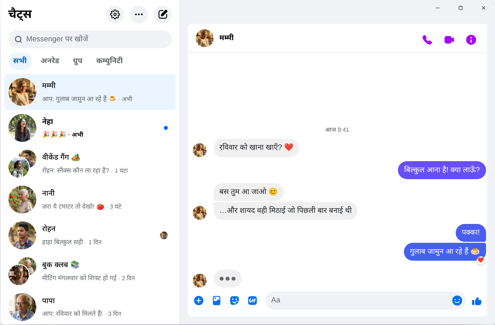

Chatpane / Windows
नवंबर 2026 में अपडेट किया गया
2026 में लैपटॉप या PC पर मैसेंजर कैसे चलाएँ
Meta ने 15 दिसंबर 2025 को Windows का Messenger ऐप बंद कर दिया, और messenger.com अब आपको Facebook पर भेज देता है। Windows 10 या 11 वाले कंप्यूटर और लैपटॉप पर आज क्या काम करता है, यहाँ देखें।
मुफ़्त और ओपन सोर्स · Windows 10 और 11 · Meta का ऐप नहीं
छोटा जवाब
PC के लिए Messenger का कोई आधिकारिक ऐप अब नहीं है। Meta ने उसे Microsoft Store से हटा दिया, और अप्रैल 2026 से कंप्यूटर पर Messenger सिर्फ़ facebook.com/messages पर, Facebook के अंदर चलता है।
अगर आप Messenger को फ़ीड और Reels के बिना उसकी अपनी विंडो में चाहते हैं, तो Chatpane Windows के लिए एक मुफ़्त, ओपन-सोर्स ऐप है जो सिर्फ़ आपकी चैट्स खोलता है। यह एक स्वतंत्र प्रोजेक्ट है, Meta का नहीं।
पुरानी गाइड और इंस्टॉलर अब काम क्यों नहीं करते
कई पुरानी गाइड अब भी Microsoft Store में "Messenger" खोजने को कहती हैं, या किसी डाउनलोड साइट से Messenger 2250.1 का इंस्टॉलर लेने को। इससे अब कुछ नहीं होगा: यह वही ऐप है जिसे Meta ने दिसंबर 2025 में बंद कर दिया। खोलने पर यह बस Facebook पर भेज देता है।
कुछ गाइड BlueStacks जैसे Android एमुलेटर में फ़ोन वाला Messenger चलाने की सलाह देती हैं। इसमें सिर्फ़ चैट के लिए कंप्यूटर पर पूरा Android सिस्टम चलाना पड़ता है।
और किसी अनजान सॉफ़्टवेयर या वेबपेज पर अपना Facebook पासवर्ड कभी न डालें। अगर कोई अपने अलग लॉगिन पेज वाला "PC के लिए Messenger" दे रहा है, तो सावधान रहें।
Windows वाले Messenger का क्या हुआ?
2024 में Meta ने Windows ऐप को एक पैकेज्ड वेब ऐप से बदल दिया। अक्टूबर 2025 में उसने ऐप बंद करने का ऐलान किया और उसे Microsoft Store से हटा दिया, और 15 दिसंबर 2025 से ऐप ने काम करना बंद कर दिया। अप्रैल 2026 में messenger.com भी बंद हो गया। पूरी जानकारी और तारीख़ें मैसेंजर डेस्कटॉप ऐप बंद: क्या हुआ में पढ़ें।
आपके विकल्प
Windows पर Messenger चलाने के तरीके
Windows पर Chatpane
Chatpane वही Messenger खोलता है जो आप ब्राउज़र में देखते हैं, इसलिए आपकी चैट्स, ग्रुप, कॉल और फ़ोटो सब वहीं रहते हैं और फ़ोन से सिंक होते हैं। हटता है तो बस Facebook का बाकी सब कुछ।
- सिर्फ़ Messenger। Facebook का फ़ीड, Reels, Marketplace और सर्च छिपे रहते हैं।
- काम के नोटिफ़िकेशन। विंडो खोले बिना नोटिफ़िकेशन से ही जवाब दें, रिएक्ट करें, पढ़ा हुआ चिह्नित करें या म्यूट करें। WhatsApp Web के साथ Messenger भी अलग विंडो में खुला रखना हो, या Marketplace के ख़रीदारों को जल्दी जवाब देना हो, तो यह काम आता है।
- टास्कबार और सिस्टम ट्रे। आइकन पर अपठित मैसेज की संख्या, Windows के साथ अपने-आप शुरू होना, और विंडो बंद करने पर भी ट्रे में चलते रहने का विकल्प।
- प्राइवेसी। टाइपिंग छिपाएँ, स्क्रीन शेयर करते समय नाम और प्रोफ़ाइल फ़ोटो छिपाएँ, और Facebook के एनालिटिक्स अनुरोध ब्लॉक करें (डिफ़ॉल्ट रूप से चालू)।
- हिंदी में। Chatpane के मेनू और सेटिंग हिंदी में अनुवादित हैं, और यह आपके कंप्यूटर की भाषा अपनाता है। अगर आपका Windows अंग्रेज़ी में है, तो Settings → General → Language में जाकर हिंदी चुनें।

इंस्टॉल कैसे करें
- Windows इंस्टॉलर डाउनलोड करें। अगर आपके PC में ARM प्रोसेसर है, तो ARM64 इंस्टॉलर लें।
- फ़ाइल खोलें। Chatpane के Windows इंस्टॉलर पर अभी डिजिटल सिग्नेचर नहीं है, इसलिए SmartScreen "Windows protected your PC" दिखा सकता है। "More info" पर क्लिक करें, फिर "Run anyway" पर। Chatpane सिर्फ़ chatpane.app या GitHub से डाउनलोड करें।
- अपने रोज़ वाले Facebook अकाउंट से लॉग इन करें। आपकी चैट्स तुरंत दिख जाएँगी।
ऑफ़िस या कॉलेज का कंप्यूटर कुछ इंस्टॉल नहीं करने देता? पोर्टेबल वर्शन (.zip) बिना इंस्टॉल किए चलता है।
सवाल-जवाब
PC पर Messenger से जुड़े सवाल
क्या Chatpane मुफ़्त है?
हाँ। न कोई कीमत, न सब्सक्रिप्शन, न विज्ञापन। यह MIT लाइसेंस के तहत ओपन सोर्स है, और इसका कोड GitHub पर है ताकि कोई भी उसे जाँच सके।
क्या यह Messenger का आधिकारिक ऐप है?
नहीं। Chatpane एक स्वतंत्र प्रोजेक्ट है, Meta से इसका कोई संबंध नहीं है। यह facebook.com/messages वाला असली Messenger अपनी विंडो में दिखाता है, इसलिए आपके मैसेज Messenger से ही जाते हैं और Meta की शर्तें ही लागू होती हैं।
क्या Facebook अकाउंट के बिना चलेगा?
नहीं। अप्रैल 2026 से Meta, Facebook अकाउंट के बिना Messenger सिर्फ़ फ़ोन के ऐप में चलाने देता है। कंप्यूटर पर Chatpane हो या कोई और तरीका, ऐसा अकाउंट चाहिए जिससे facebook.com पर लॉग इन हो सके।
क्या यह Windows 10 पर चलता है?
हाँ, Windows 10 और 11 दोनों पर। Chatpane, Microsoft Edge WebView2 इस्तेमाल करता है, जो Windows 11 में पहले से होता है। Windows 10 पर अगर यह न हो, तो इंस्टॉलर इसे खुद डाउनलोड कर लेता है।
क्या वीडियो कॉल कर सकते हैं?
हाँ। यह पूरा Messenger है, इसलिए वॉइस और वीडियो कॉल अपनी अलग विंडो में खुलती हैं, ठीक facebook.com की तरह।
Chatpane पाएँ
मुफ़्त और ओपन सोर्स। कुछ ही सेकंड में डाउनलोड हो जाता है - यह सिर्फ़ करीब 4 MB का है।
पुराना Intel Mac? Intel .dmg
चेकसम के साथ पूरी लिस्ट
GitHub पर मौजूद है
- या brew install --cask kristofferR/tap/chatpane